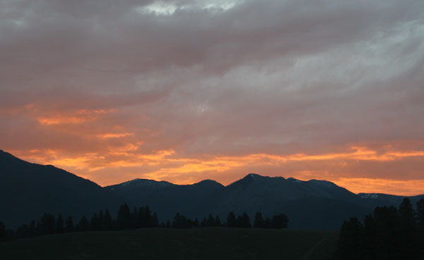
Sunrise out our living room windows
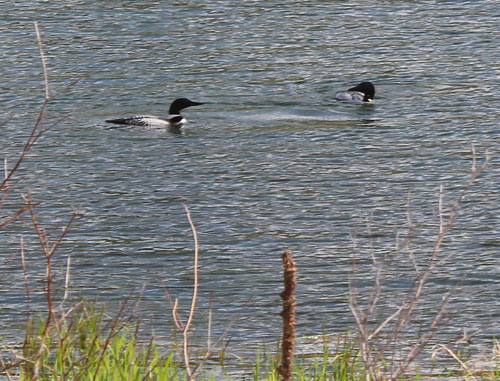
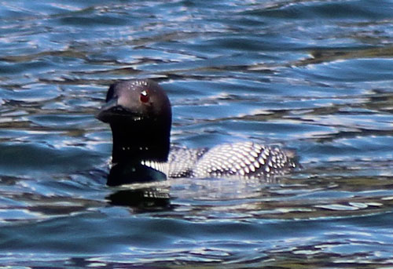
We feel so blessed to have loons living in the lake in
front of our house.
They make the most beautiful sounds, and it is very fun to watch them live
life.
I will share a sneak preview of news we learned in June -
they are now the
proud parents of two baby loons!
Here is a link to a page where you can hear
the different Loon calls and get a translation of them.
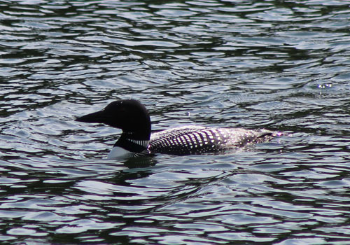
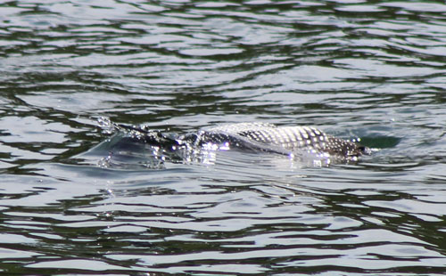
This picture shows the loon just going down for a dive.
One Saturday the Casazza family got together to work the
cows for the spring.
Being not quite at home on a ranch, I swooped in for a few pictures and got
out of there again real quick!
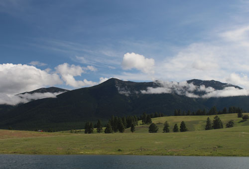
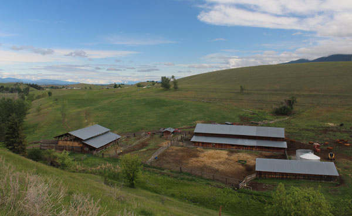
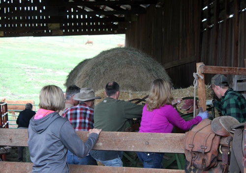
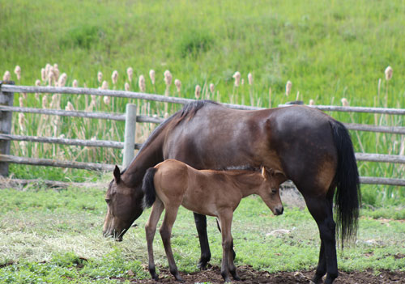
all working together
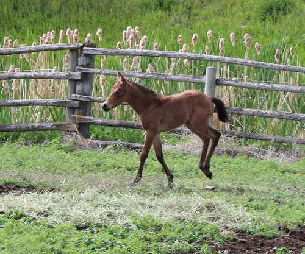
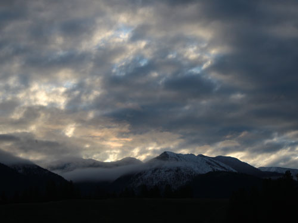
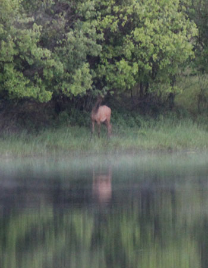
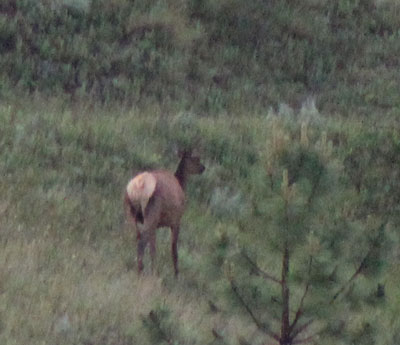
A pair of elk we sometimes see across the lake
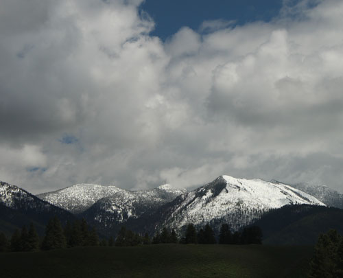
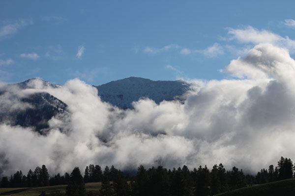
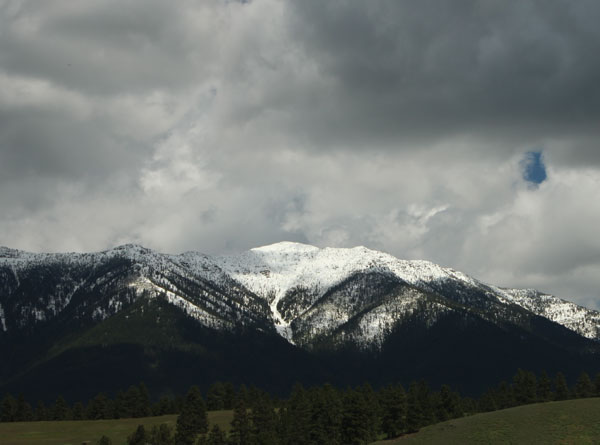

Our home. Sometimes I can't even believe it.
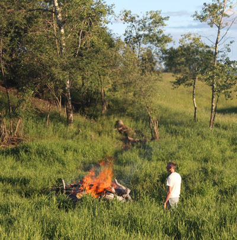
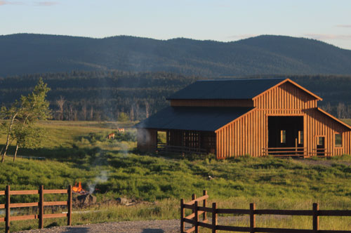
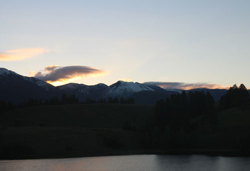
I thought that was a neat cloud formation on the left side
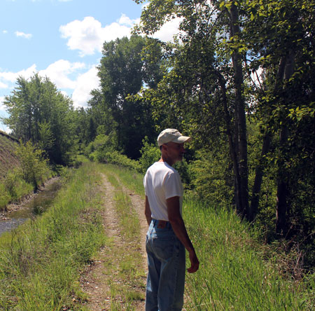
makes a lovely burbling sound and the cottonwoods make the air smell amazing.
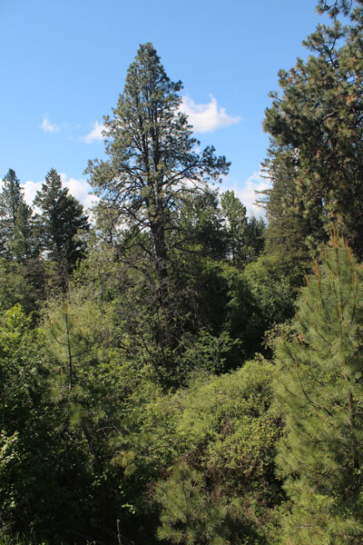
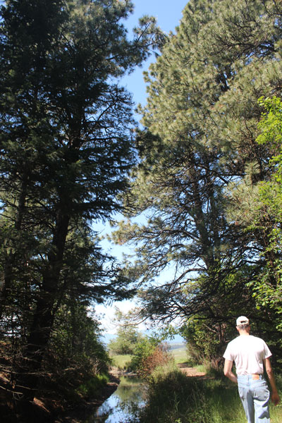
far down in a deep gully. Eric tried to wrap his arms around the base
and got only about half way, so that makes it about 12' around I think.
We love this tree.
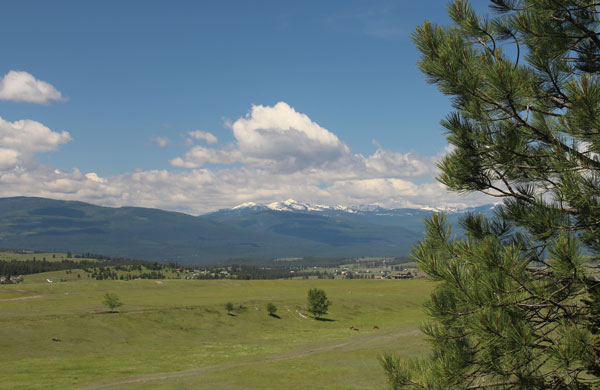
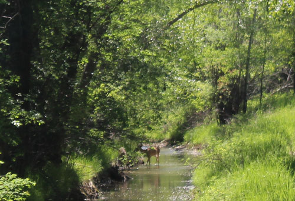
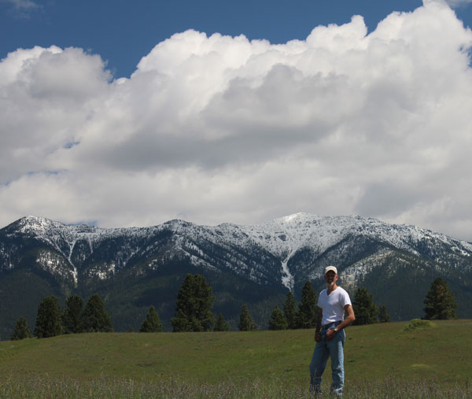
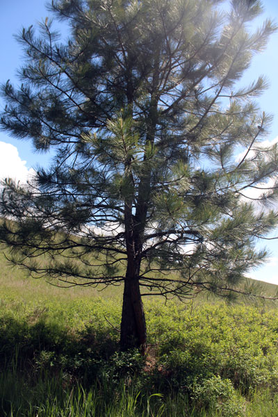
The men-folk around here are pretty easy on the eyes too!
"Love trees" they are entwined
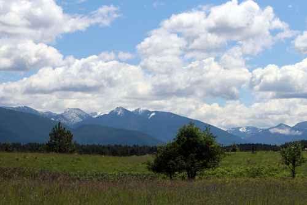
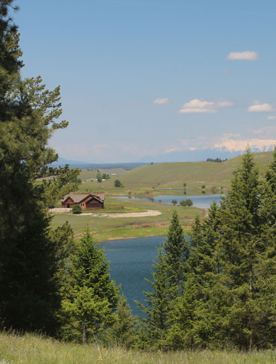
barely see to the right are Canadian Rockies.
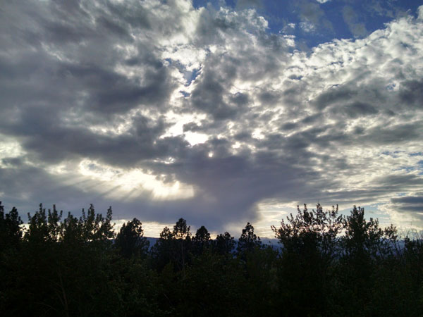
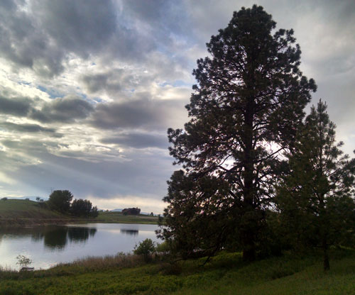
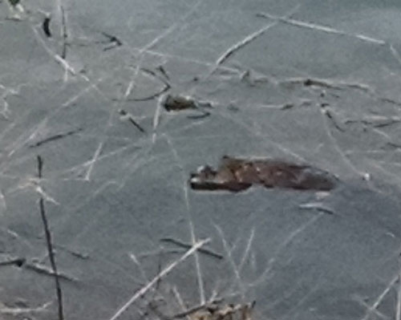
This muskrat came out to check on us one evening as we walked by.
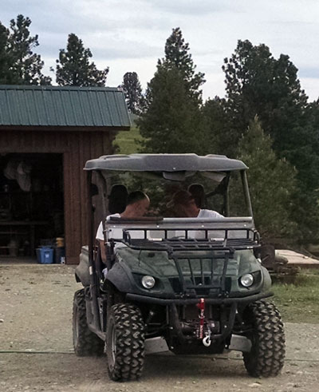
Here they check out his sweet new ride.
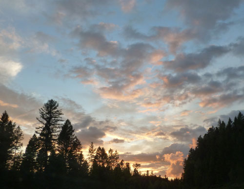
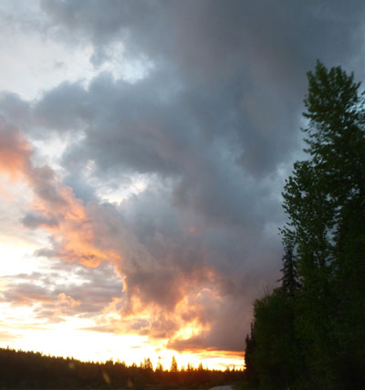
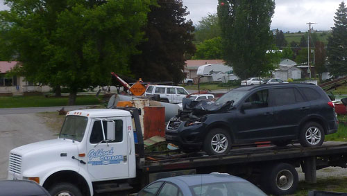
a moose at 60 mph. The car is totaled but incredibly they were unhurt. Thank you Lord!